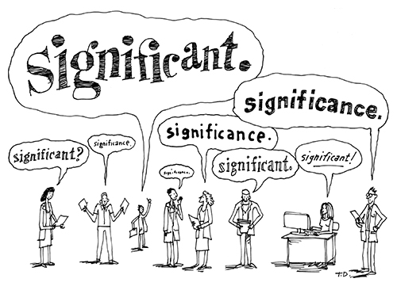

my_model <- lm(bill_length_mm ~ body_mass_g + flipper_length_mm,
data = penguins)Statistical Critique 2: Exploring p-values

Assignment Details
In your second statistical critique, you will focus on critiquing another key aspect of any statistical argument—statistical significance. No doubt you have seen \(p\)-values in a previous statistical course and / or disciplinary course, and this week you’re adding to that knowledge. For this critique you will compare the model you selected in your Midterm Project with what model you would have chosen based on a statistical test.
This critique involves coding! You can find a template for critique on Posit Cloud.
Part Zero: p-values in Multiple Linear Regression
For the first step of this critique, you are required to read about how p-values can be used in the context of multiple linear regression: Extending to Multiple Linear Regression
1 Part One: Revisiting the Midterm Project
For the first part of this critique, you are going to revisit the model you selected for your Midterm Project. You need to copy-and-paste the code you wrote in your Midterm Project to create your 2-3 visualizations. After these visualizations, you should write a 2-3 sentence justification as to why you chose the model you did in your Midterm Project. This should be copied from the “Proposed Statistical Model” section of your Midterm Project!
2 Part Two: Using p-values Instead
For this second part, you are tasked with testing what regression model you would have chosen if you had used p-values to make your decision. Regardless of the model you chose for your Midterm Project, you will fit the most complex regression model. If you used two numerical explanatory variables, the most complex model has both variables included. If you used one numerical and one categorical explanatory variable, the most complex model is the different slopes (interaction) model.
For two numerical explanatory variables
- fit a multiple linear regression with both variables included:
- run an ANOVA to test if each variable should be included:
anova(my_model)For one numerical and one categorical explanatory variable
- fit a different slopes multiple linear regression:
my_model <- lm(bill_length_mm ~ flipper_length_mm * species,
data = penguins)- run an ANOVA to test for different slopes
anova(my_model)3 Part Three: Learning More about the Backlash Against \(p\)-values
“The p-value was never intended to be a substitute for scientific reasoning.” Ron Wasserstein, Executive Director of the American Statistical Association
Issues with the use of \(p\)-values had gotten so problematic that the American Statistical Association (ASA)1 put out a statement in 2016 titled, “The ASA Statement on Statistical Significance and \(p\)-Values”. This statement includes six principles which address misconceptions and misuse of the \(p\)-value.
In March of 2019, Valentin Amrhein, Sander Greenland, Blake McShane and more than 800 signatories published an article in Nature calling for an end to “statistical significance”. The article details how, on top of the many common misunderstandings about hypothesis testing and \(p\)-values, there is an incentive for researchers to “cherry pick” only the results that are “statistically significant” while dismissing those that aren’t. There are two problems with this system:
- it incentivizes researchers to do whatever it takes to obtain “significant” p-values, even through dishonest means
- it dismisses the importance of results where no “significant” effects are found
For Part Three, you are going to inspect what the publication requirements are for journal the article you selected (in Week 1) was published in.
Statistics in Your Field
You are revisiting (again) the article you chose in Week 1 for the “Statistics in your Field” assignment!
First, go to the website for the journal where your article was published. Now, find their criteria for publication. If you are having a difficult time finding these criteria, it may be simpler to Google “title of journal publication criteria,” substituting the name of your journal.
Search through the criteria and see what the requirements are for (1) the “significance” of the findings and (2) the availability of the data and / or analyses. Describe what you find!
Tip
Feel free to type out what you find while searching the journal or simply copy-and-paste the criteria you find listed on their website.
4 Part Four: Lessons Learned
Now that you have explored the use of p-values for model selection and publication criteria, write down two things you have learned that you will take with you in your future courses / research.
Footnotes
This is my professional organization.↩︎